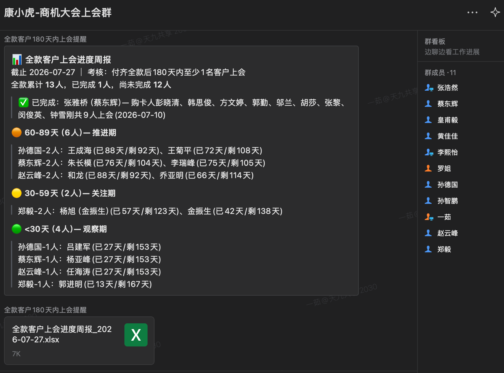
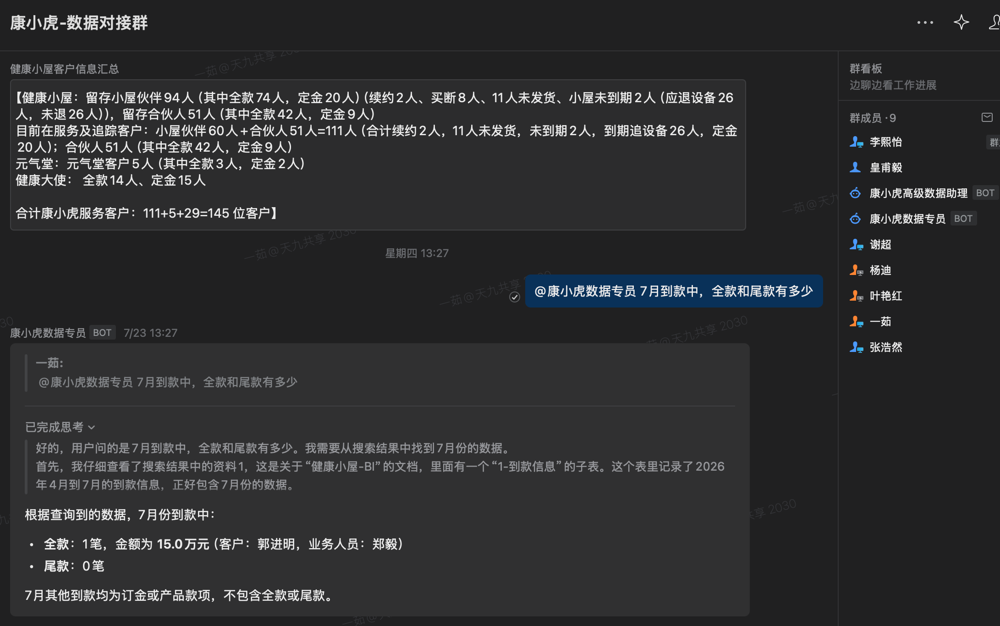
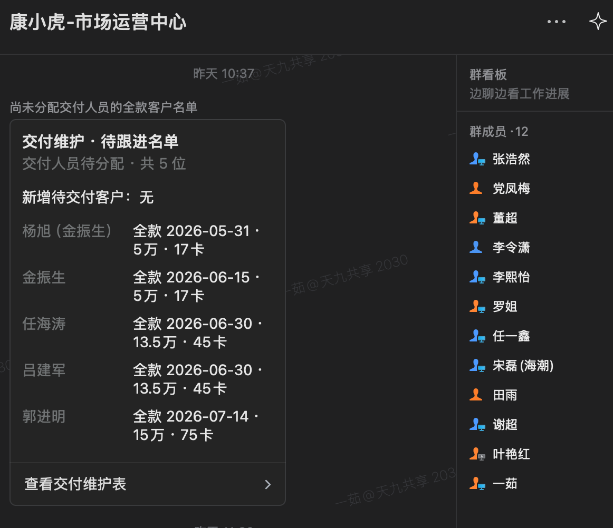
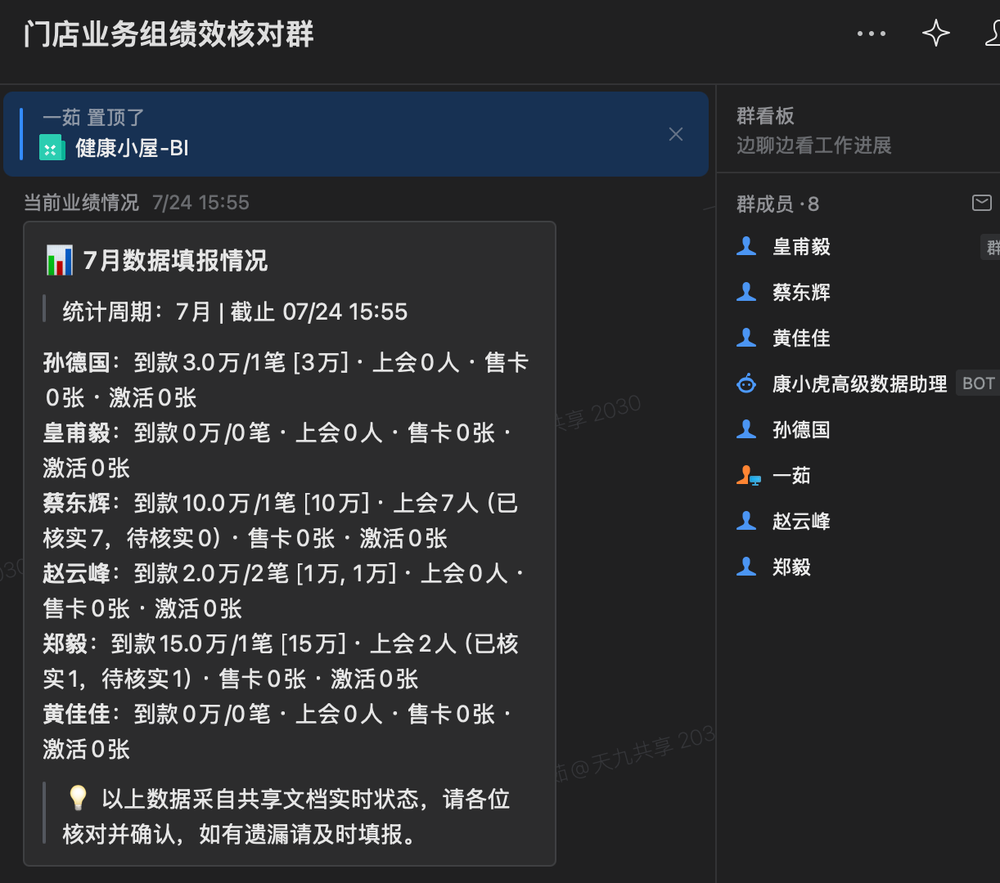

业绩数据散落于截图、即时通讯、电子表格等多源异构通道，手工填报数据治理合规度仅约 70%，单条数据流转涉及 2-3 角色、链路耗时半日，月末对账成本高企。
采集、报表、知识、协同四域工具各自为政，数据无贯通。月报 3 天、周报 4 小时、日报 2 小时，全靠人工串联，缺乏统一数据底座支撑经营分析。
管理层获取经营全貌依赖人工汇表，异动指标多为事后追溯。跨部门响应均时 4 小时，关键触达依赖人肉记忆，高频遗漏，决策滞后于业务发生。
一线人员仅需将业绩凭证发送至企微群，机器人基于 WebSocket 长连接 7×24h 在线实时接收，多模态 AI OCR 结构化抽取金额、客户、卡项等字段，经 Webhook 实时写入智能表格对应子表；8 项编排任务定时催报，多源交叉校验自动标注异动数据，实现非结构化凭证到结构化数据资产的原生转化。
编排任务每日定时读取智能表格数据底座，自动完成达成率计算、环比趋势分析、红黄绿三级阈值监控与异动高亮，按固定模板输出日报卡片（KPI 摘要 + 达成进度条 + 异动清单），即时触达企微管理群。管理层移动端即可获取当日经营全貌，实现从「事后追溯」到「当日预警」的决策范式转换。




自动取数 → KPI 智能计算（达成率 + 红黄绿阈值）→ ECharts 交互呈现（KPI 卡片 + 10+ 趋势图 + 可点击穿透明细）→ GitHub Pages 一键外链部署。管理层移动端浏览器即可随时访问，零权限、零安装，完全替代商业 BI 套件，实现经营决策驾驶舱的自助化交付。
以下报表均为本引擎已交付的正式运营文档（密码：888888）：
四通道自动采集入库，ClaudeCode 自动生成标准化 frontmatter（标题/类型/标签/关联文档），文件名关键词自动路由子目录，构建三级存储架构。区别于常规知识库的"大而全"，核心在于精细元数据治理与严谨语义逻辑，使 AI 能按"时间+类型+主题+关联"四维精准检索，支撑复杂业务文档分钟级生成。
15 个深度问题、横跨大赛/企业/行业三大板块、涉及 10+ 份源文件（逐字稿/品牌全案/复盘报告等）。传统模式至少 2 天，本体系5 分钟输出完整稿件，质量获高管认可。
📎 下载完整文档：新京报专访卢泰宇 — 采访参考回答.docx8 项编排任务全部 ACTIVE 生产运行，覆盖行业情报速报、数据催报、客户上会提醒、BI 看板分发、月度客户汇总等；wecom-unified Skill 构建企微通讯录/消息/文档/智能表格/日程/会议/待办 6 业务环节协同矩阵，单人完成原本 2-3 角色的全域办公，实现组织效能的非线性跃升。
| 频次 | 任务 | 商业价值 |
|---|---|---|
| 每日 | 大健康行业情报速报（自动汇集行业动态推送给全员） | 行业情报零时差触达 |
| 每周一 | 引流上会数据汇总与核对推送（自动汇总并推送至负责人确认） | 数据确认流程自动化 |
| 每周一 | 全款客户上会提醒（高价值客户确保零遗漏） | 高价值客户闭环管理 |
| 每周五 | 业务数据缺填催报（自动读取表格，标注未填人员并精准提醒） | 漏填率归零的关键机制 |
| 每周一 | 康小虎当周待服务客户名单推送（自动汇总本周服务安排） | 客户服务周期自动化 |
| 每月 | 康小虎月度服务客户汇总推送（首个工作日自动触发） | 月度客户触达零遗漏 |
| 每月 4 次 | 健康小屋经营数据 BI 看板定时推送（双 sheet 自动生成+分发） | 管理层定期数据同步 |
| 每小时 | 企微机器人图片自动归档入库（持续归档业务截图） | 图片数据零遗漏沉淀 |
| Skill | 功能 | 商业角色 |
|---|---|---|
| wecom-bot-ocr-to-smartsheet | 企微机器人截图 → OCR → 智能表格 | 数据采集引擎 |
| wecom-unified | 企微 6 个业务环节全功能 CLI | 全域协同中枢 |
| monthly-report | 月/季报 ECharts 看板 + GitHub Pages 外链 | 决策可视化引擎 |
| weekly-report | 周报自动取数+环比计算+异常标注 | 周度运营仪表盘 |
| shanghui-insert | 会议截图 OCR → 交叉比对 BI → 补全入表 | 会务数据自动化 |
| ccc-sync / iii-sync | 桌面文件自动解析入库 + Obsidian 路由 | 知识资产采集器 |
| email-sync | 邮件自动抓取+提炼知识卡片+Obsidian 入库 | 邮件知识沉淀 |
| minimax-xlsx | Excel 全功能操作（创建/读取/编辑/分析） | 表格数据处理引擎 |
| obsidian-yiru | Obsidian 知识库全量查询与检索 | 知识库访问入口 |
| kangxiaohu-ppt | 部门专属 PPT 生成（青绿 VI 主题 + 12 种页型） | 汇报物料自动化引擎 |
每个 Skill 与编排任务均为独立能力单元——可独立运行、可热拔插、可跨项目复用，不耦合特定系统或数据格式。10 个 Skill + 8 个任务已形成可自由编排的「能力组件库」。
全部运行于企微 + 腾讯文档 + GitHub Pages + Obsidian 现有工具生态。零新增采购、零系统开发、零运维成本——纯靠「生态组合创新」实现互联网公司级的数据基建。
五层之间数据单向贯通：采集层产出底座，执行层读取底座生成日报，洞察层汇总为驾驶舱，记忆层提供语义理解，调度层驱动全局。数据只流一次，价值逐层释放。
| 业务线 | L1 采集 | L2 执行 | L3 洞察 | L4 记忆 | L5 调度 | 可复刻 |
|---|---|---|---|---|---|---|
| 销售线 | 销售日报OCR | 日报+达成率 | 业绩排行驾驶舱 | 话术/竞品库 | 催报触达 | ✓ |
| 会员运营 | 注册缴费OCR | 会员日报 | 转化漏斗驾驶舱 | FAQ知识库 | 触达提醒 | ✓ |
| 供应链 | 进出库OCR | 库存日报 | 周转驾驶舱 | — | 预警触达 | ✓ |
| HR/行政 | 考勤报销OCR | — | 人效驾驶舱 | 制度流程库 | 周期提醒 | ✓ |
| 客服 | — | — | — | 百问百答库 | 工单分类 | ✓ |
| 财务 | 到款OCR入账 | 资金日报 | 对账驾驶舱 | — | 月结提醒 | ✓ |
这不是用 AI 做了一个工具，是用 AI 重构了一套企业运营智能中台——
数据从哪来（采集）、怎么用（执行+洞察+记忆）、谁来调度（协同），三问一次性回答。
五层可组合式架构，任何业务线装配即用。